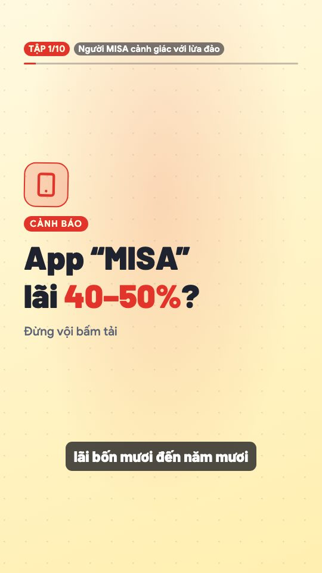
1hook4.9s
App “MISA” cho đầu tư, lãi bốn mươi đến năm mươi phần trăm. Nghe hấp dẫn nhỉ?
♪ impact · whoosh

App “MISA” cho đầu tư, lãi bốn mươi đến năm mươi phần trăm. Nghe hấp dẫn nhỉ?
♪ impact · whoosh
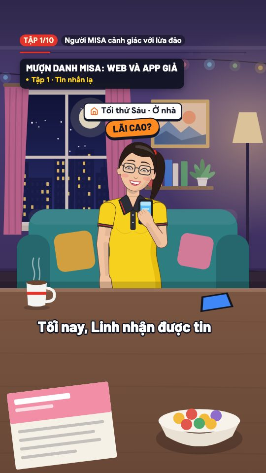
Tối nay, Linh nhận được tin nhắn từ một người quen.
Có app MISA đầu tư gói dữ liệu, lãi cao lắm! Em tải đi!
Linh hào hứng, định chuyển tiền ngay.
♪ whoosh · whoosh-soft · pop
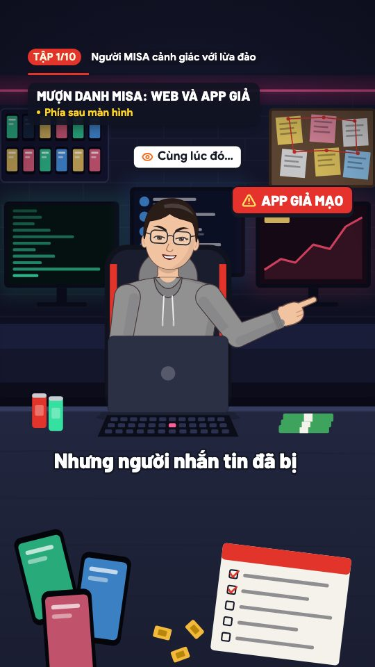
Nhưng người nhắn tin đã bị chiếm tài khoản, hoặc chính là kẻ lừa đảo.
Cá sắp cắn câu rồi!
♪ whoosh-soft · error · whoosh
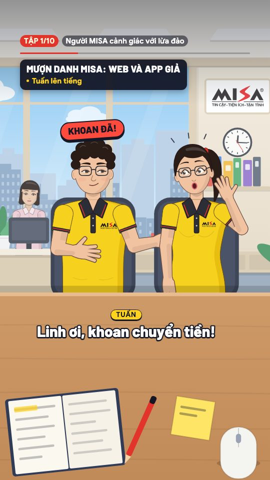
Linh ơi, khoan chuyển tiền!
MISA không có app đầu tư nào hết.
Hả? Vậy app đó là gì?
♪ pop · whoosh
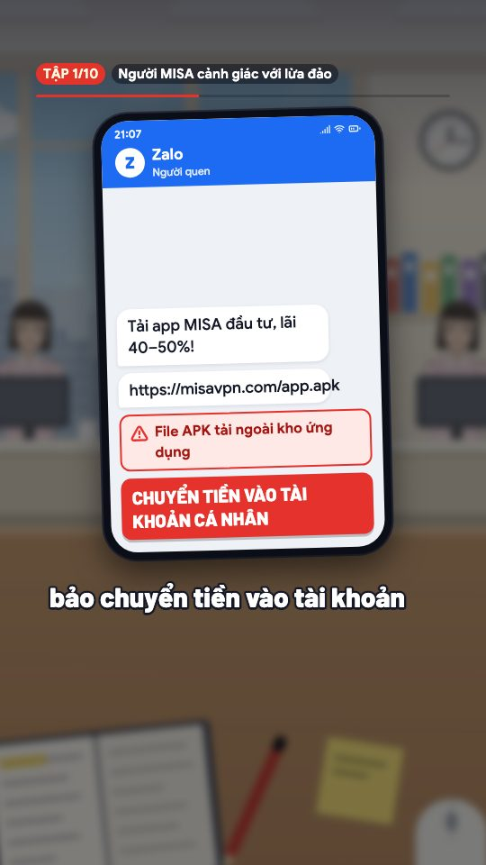
Dấu hiệu một: hứa lãi bốn mươi đến năm mươi phần trăm từ “gói dữ liệu”.
Dấu hiệu hai: bắt tải file APK hoặc IPA qua đường link, không qua kho ứng dụng.
Dấu hiệu ba: bảo chuyển tiền vào tài khoản cá nhân, nhưng nhận là của MISA.
♪ whoosh · swoosh-up · bubble · error · click
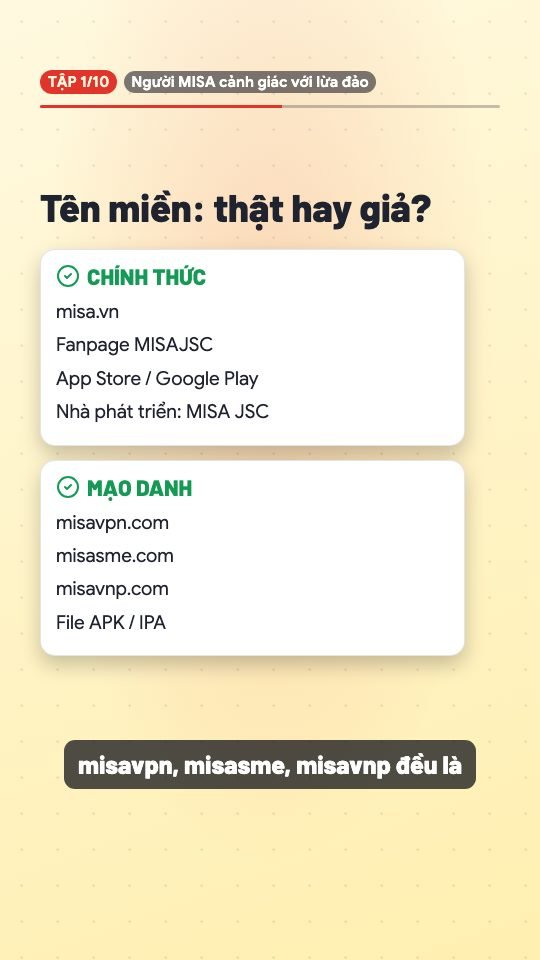
Hãy nhìn kỹ tên miền.
Kênh chính thức chỉ có website misa.vn, fanpage MISAJSC và app trên kho ứng dụng.
Tên miền thêm chữ lạ như misavpn, misasme, misavnp đều là giả.
♪ whoosh · tick
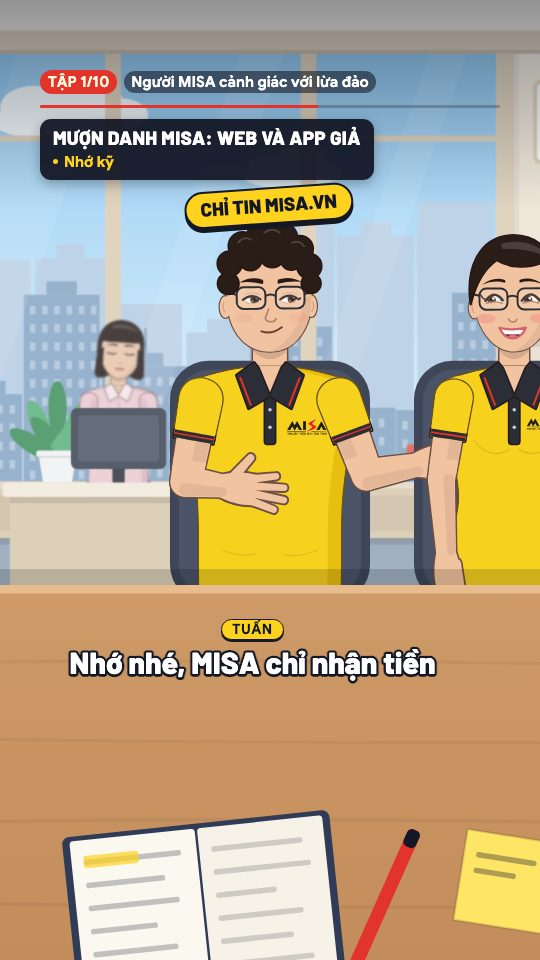
Nhớ nhé, MISA chỉ nhận tiền qua tài khoản đứng tên Công ty Cổ phần MISA.
Em hiểu rồi, em sẽ báo cho người quen biết luôn!
♪ whoosh · pop
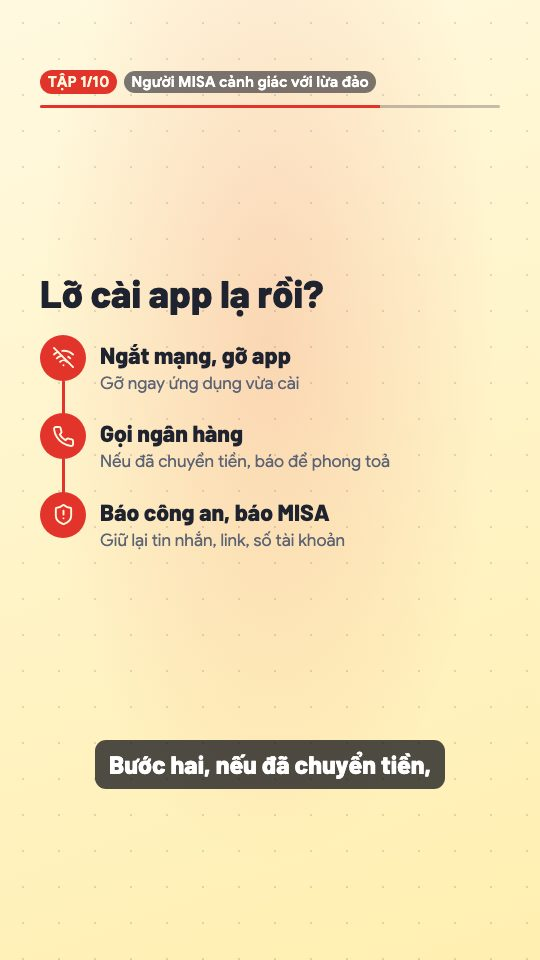
Nếu lỡ cài app lạ rồi thì sao?
Bước một, ngắt mạng và gỡ ứng dụng ngay.
Bước hai, nếu đã chuyển tiền, gọi ngân hàng để xin phong toả.
Bước ba, giữ lại tin nhắn, đường link, số tài khoản, rồi báo công an và báo MISA.
♪ whoosh · pop
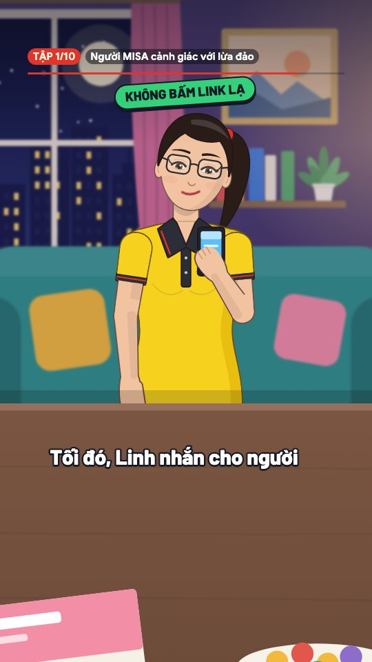
Tối đó, Linh nhắn cho người quen: tài khoản của bạn có thể đã bị chiếm.
Mình sẽ không bấm link lạ, và bạn nhớ đổi mật khẩu nhé!
Một tin nhắn nhỏ, có thể cứu cả một chuỗi người quen.
♪ whoosh · pop
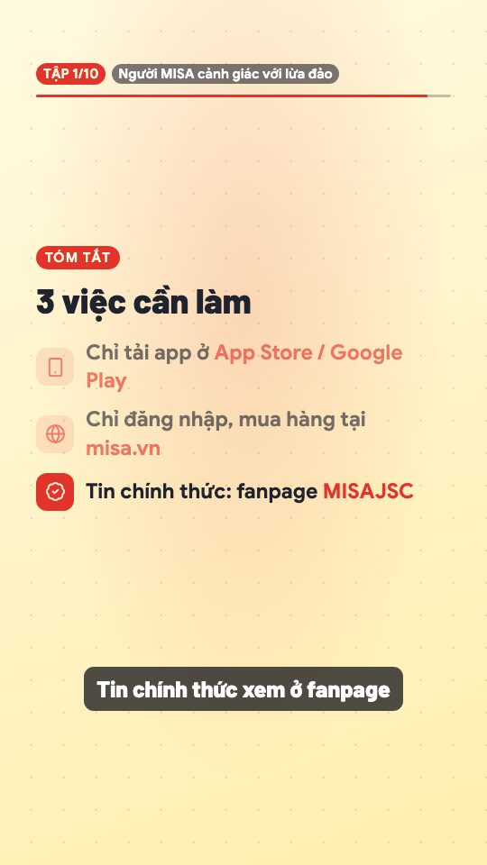
Ba việc cần nhớ.
Chỉ tải app ở App Store hoặc Google Play.
Chỉ mua và đăng nhập tại misa.vn.
Tin chính thức xem ở fanpage MISAJSC.
♪ pop · whoosh
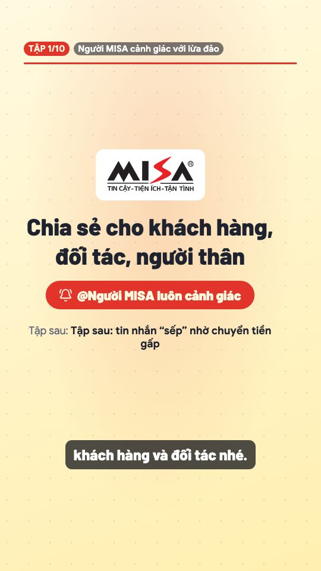
Hãy chia sẻ video này cho bạn bè, người thân, khách hàng và đối tác nhé.
♪ whoosh · chime